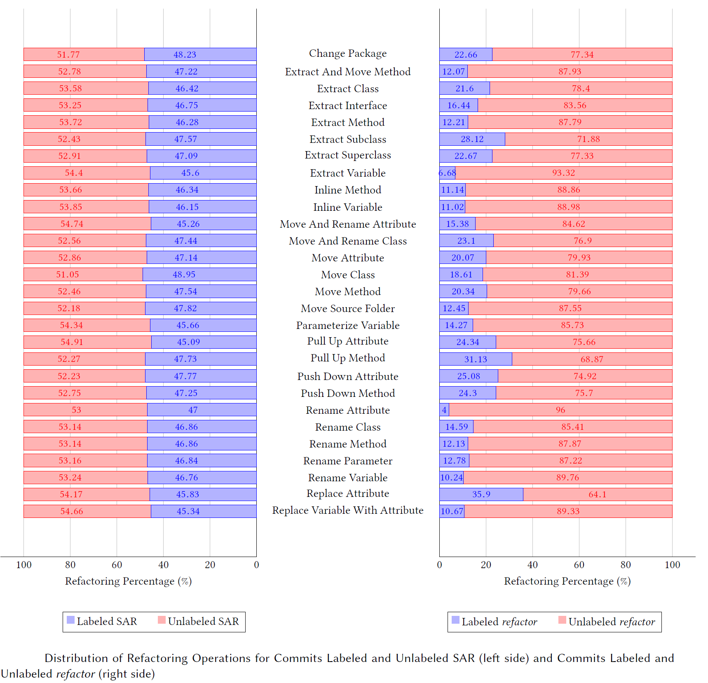

[Murphy-Hill et al. 2008] proposed several hypotheses related to four methods that gather refactoring data and outlined experiments for testing those hypotheses. One of these methods concerns mining the commit log. [Murphy-Hill et al. 2008] hypothesize that commits labeled with the keyword “refactor” do not indicate more refactoring instances than unlabeled commits. In an empirical context, we test this hypothesis in two steps. In the first steps, we used the keyword “refactor”, exactly as dictated by the authors. Thereafter, we quantified the proportion of commits including the searched label across all the considered projects in our benchmark. In the second step, we re-tested the hypothesis using the subset of 230 SAR patterns, whose occurrence in refactoring commits was found to be significant with respect to non-refactoring commits. We counted the percentage of commits containing any of our SAR labels. The result of the two rounds resides in a strict set of commits containing the label “refactor”, which is included in a larger set containing all patterns, and finally a remaining set of commits which does not contain any patterns. For each of the sets, we count the number of refactoring operations identified in the commits. Then, we break down the set per operation type.
In order to compare the quantity of refactorings identified for each set, i.e., labeled and unlabeled commits with the keyword “refactor”, along with labeled and unlabeled commits with SAR patterns. We used the Wilcoxon test, as suggested by [Murphy-Hill et al. 2008] for the purpose of testing the hypothesis. We then applied the non-parametric Wilcoxon rank-sum test to estimate the significance of differences between the numbers of the sets. The choice of Wilcoxon rank-sum test is motivated by the independence of sets from each other (the occurrence of refactor is independent from the occurrence of the remaining patterns).
The below figure shows the distribution of refactorings in labeled and unlabeled commits with SAR patterns (group 1 on the left) and labeled and unlabeled commits with the keyword refactor (group 2 on the right). The first observation we can draw is that “Replace Attribute” stands as most labeled refactoring with a percentage of 35.9% for group 2, while the difference between operations percentages, in group 1, is not significant, with “Move Class” having the highest percentage of 48.95%. Another observation is that “Pull Up Attribute” turns out to be the most unlabeled refactoring with a score of 54.91% for group 1, whereas “Rename Attribute” tends to be the most unlabeled refactoring for group 2. This results is consistent with one of the previous studies stating that renames are rarely labeled, as they detected explicit documentation of renames in less than 1% of their dataset [Arnaoudova et al. 2014a]. For both tests, we notice that developers tend to label more refactorings applied to code elements with higher granularity level, i.e., at the package level. Conversely, refactorings that are implemented at method level and at attribute level tend to have the lowest percentage with commits labeled “refactor”. That sheds light on the variety of ways to express refactorings, which depend on the levels of granularity. While it is difficult to find a rationale for such observation, it seems that, making changes at the package and class level requires more exposure to the code design, in comparison with identifier or parameter changes, besides being less frequently to occur, and so when it happens, it is most likely to be documented.
By comparing the different commits that are labeled and unlabeled with SAR patterns, we observe a significant number of labeled refactoring commits for each refactoring operation supported by the tool Refactoring Miner (p-value = 0.0005). This implies that there is a strong trend of developers in using these phrases in refactoring commits. The results for commits labeled and unlabeled “refactor” with a p-value = 0.0005 engender an opposite observation, which corroborate the expected outcome of Murphy-Hill et al.’s hypothesis. Thus, the use of “refactor” is not a great indication of refactoring activities. The difference between the two tests indicates the usefulness of the list of SAR patterns that we identified.
